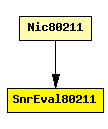

File: NetworkInterfaces/MF80211/phyLayer/snrEval/SnrEval80211.ned
C++ definition: click here
This component has been taken over from Mobility Framework 1.0a5.
The following diagram shows usage relationships between modules, networks and channels. Unresolved module (and channel) types are missing from the diagram. Click here to see the full picture.
If a module type shows up more than once, that means it has been defined in more than one NED file.
| Nic80211 | This NIC implements an 802.11 network interface card. |
| Name | Type | Description |
|---|---|---|
| channelNumber | numeric const | channel identifier |
| debug | bool | debug switch |
| transmitterPower | numeric const | |
| bitrate | numeric const | |
| headerLength | numeric const | |
| carrierFrequency | numeric const | |
| thermalNoise | numeric const | |
| pathLossAlpha | numeric const | |
| sensitivity | numeric const |
| Name | Direction | Description |
|---|---|---|
| uppergateIn | input | |
| uppergateOut | output | |
| radioIn | input | to receive AirFrames |
simple SnrEval80211 parameters: channelNumber: numeric const, // channel identifier debug: bool, // debug switch transmitterPower : numeric const, bitrate: numeric const, headerLength: numeric const, carrierFrequency: numeric const, thermalNoise: numeric const, pathLossAlpha: numeric const, sensitivity: numeric const; gates: in: uppergateIn; out: uppergateOut; in: radioIn; // to receive AirFrames endsimple